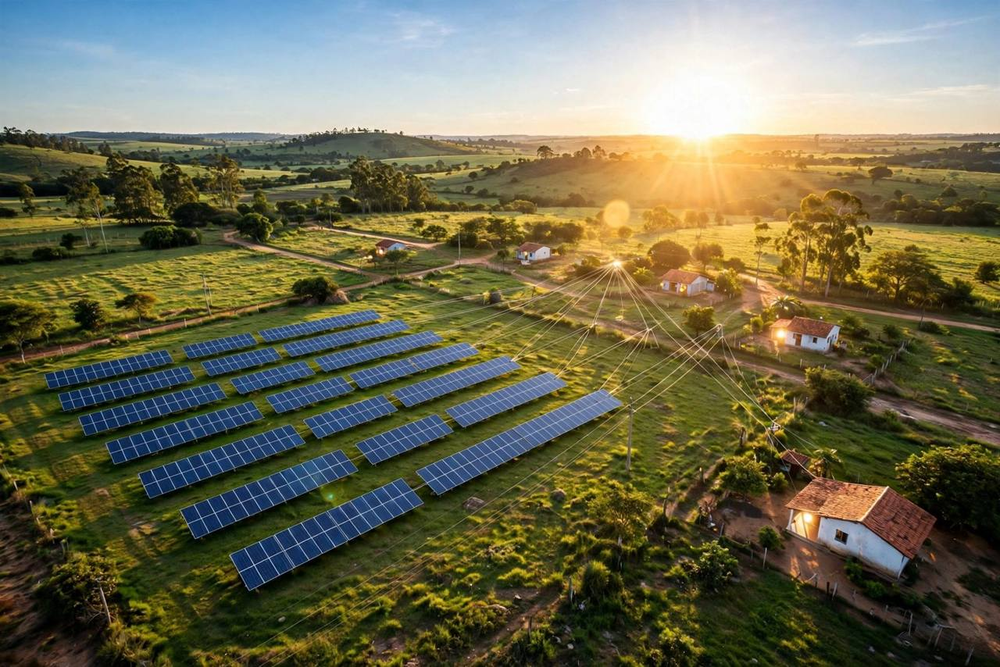

◎ Missão
Levar energia limpa e gratuita para famílias rurais sem distribuidora, com fazendas solares isoladas.
A Luz Solidária nasceu de uma pergunta simples: por que, em pleno século XXI, ainda existem famílias que estudam à luz de lampião? Somos uma iniciativa estudantil, pensada para funcionar em parceria com o poder público, que cria Fazendas Solares Isoladas (off-grid) em terrenos ociosos.
Cada fazenda tem bateria central e uma micro-rede própria, que leva energia pela primeira vez a famílias rurais sem acesso à distribuidora. Começamos com um campo piloto e hoje operamos três.

Levar energia limpa e gratuita para famílias rurais sem distribuidora, com fazendas solares isoladas.
Ser um modelo replicável de geração isolada, atendendo o máximo de famílias com poucos campos.